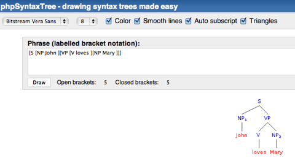
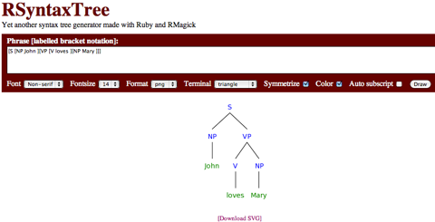
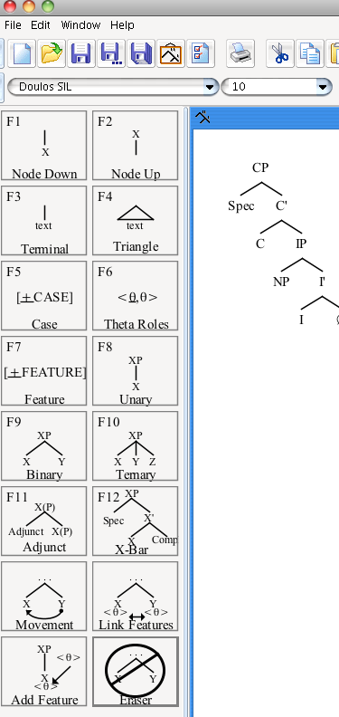
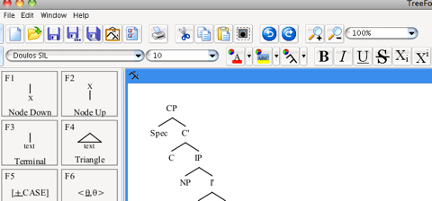
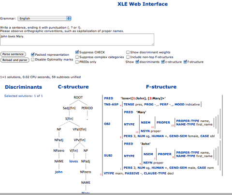
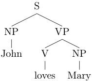
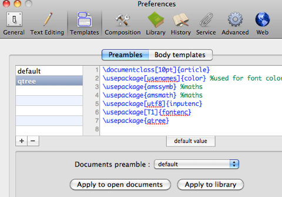
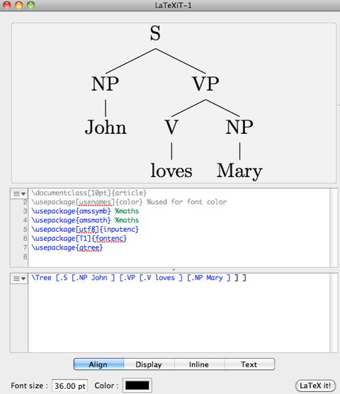
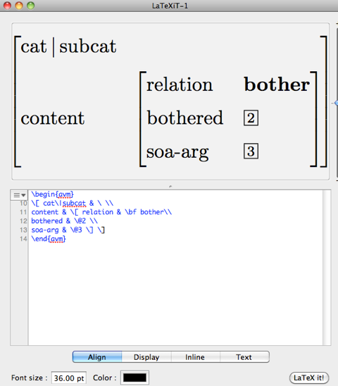

Drawing syntactic trees
You can go to Mei and Andé Eisenbach’s page and convert a bracketed notation to a graph online:
phpSyntaxTree
It has a simple and intuitive interface, and allows for the export of Portable Network Graphics (PNG) or Scalable Vector Graphics (SVG). The SVG format is in particular interesting, since it allows you to scale the graphic nicely to any desirable size.

Yet another such online tree drawing tool is the RSyntaxTree (Yet another syntax tree generator made with Ruby and RMagick) application. My personal impression is, it generates nicer tree layouts, compared to phpSyntaxTree.

It also allows for the generation of some more graphics formats (that can be copied and pasted in some application), as well as SVG.
Standalone applications
One of the available standalone applications is Donald Derrick’s TreeForm (download URL from SourceForge), which is a Java application, i.e. it should run on systems with a Java runtime installed (that is Windows and Linux users might need to install the Java runtime). It provides all kinds of interesting tools and elements to generate trees via drag-and-drop and simple editing. Exporting to various image formats is possible.


There is also Tony Kroch’s Trees application, which only runs on Windows, but can be made available on Linux or Mac using Wine or Darwine. Since I do not have a running Windows around, and also no installation of Wine or Darwine, I cannot comment or discuss more details here.
Another such Windows specific Tree editor is the Syntax Tree Editor by Jeff Epstein and Edmund O’Neill. It is an application based on .NET. From the screenshots it looks like an interesting application. Too bad it is limited to Windows only...
Using XLE and Large Grammars to generate C- and F-structures the LFG way
One way to generate the tree structures is also to use a real parser, like the XLE. There is a XLE Web Interface with the large German and English Lexical Functional (LFG) Grammars. Just type in a sentence and get the resulting tree and corresponding F-structure.

But, remember, the trees here are motivated by the theory of LFG, they might differ from the trees used in your specific course, or by your teacher.
Using LaTeX
If you are using LaTeX, you can generate trees with the qtree package, The following code:
\documentclass[pdftex,10pt]{article}
\usepackage[utf8]{inputenc}
\usepackage[T1]{fontenc}
\usepackage{fullpage}
\usepackage{qtree}
\pagestyle{empty}
\begin{document}
\Tree [.S [.NP John ] [.VP [.V loves ] [.NP Mary ] ] ]
\end{document}
\end
will generate the following graphic, that you can crop and include in your document:

If you use pdflatex for this and generate PDF files, your tree could be used as a nicely scalable PDF image. There are various conversion and PDF manipulation tools around that you could use for editing such qtree outputs.
Joshua Herring pointed out to me that there is an updated version of TikZ that uses the syntax of Qtree and offers various improvements.
Miriam Butt pointed out to me that there is still the now more than 15 years old (and unchanged) tree-dvips from CSLI Publications that uses postscript drawing macros, and includes the avm.sty by Chris Manning.
Emily Bender pointed out that one can use LaTeXIt on Macs for the generation of trees. I found a blog entry by Paul Hagstrom on lingtech about using pst-jtree with LaTeXIt. Here is a small instruction for using qtree with LaTeXIt.
Open LaTeXIt and in Preferences choose Templates. In Templates add with the + button a new Preamble like this:
\documentclass[10pt]{article}
\usepackage[usenames]{color} %used for font color
\usepackage{amssymb} %maths
\usepackage{amsmath} %maths
\usepackage[utf8]{inputenc}
\usepackage[T1]{fontenc}
\usepackage{fullpage}
\usepackage{qtree}
and label it for example qtree, as in the following image:

In the LaTeX menu of LaTeXIt choose Show preamble. In the top-left chooser you can select the preamble for your LaTeX code. In the Body template field you can input the tree code as shown in the following graph, press the button LaTeX it! and enjoy. You can drag and drop the resulting graph to any of the common applications.

Thanks, Emily, for pointing this out! This is cool!
And, just to extend this, if you want to add AVMs to the trees, in the same blog Paul Hagstrom explains, how to get the AVMs, e.g. the F-structure in LFG.

If you want to start using LaTeX (it is never too late), you might want to look at:
MikTeX for Windows
The TeX Live packages and system for Unix (Linux etc.)
MacTeX for Mac
And, there is a new version of LyX coming (2.0), take a look at it, it is cool, has some nice things for linguists, and can generate OpenDoc formats, PDF, Latex etc.:
Lyx.org
LinguistLyX